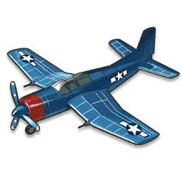

BTD Destroyer

- Chế tạo bởi Douglas Aircraft Corporation.
- Thiết kế cho 1 đội bay 1 người.
- Chiều dài: 11.77 m
- Sải cánh: 14.64 m
- Chiều cao: 5.05 m
- Diện tích bề mặt cánh: 34.70 m2
- Trọng lượng (không tải): 5,851 kg
- Động cơ Wright R-3350-14 Cyclone 18 xy lanh, với công suất 2,300 mã lực.
Back to Home